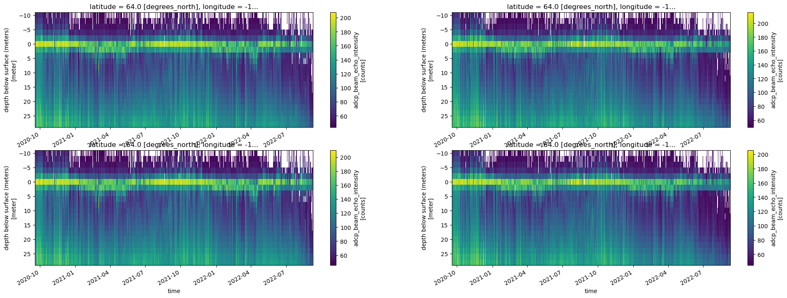
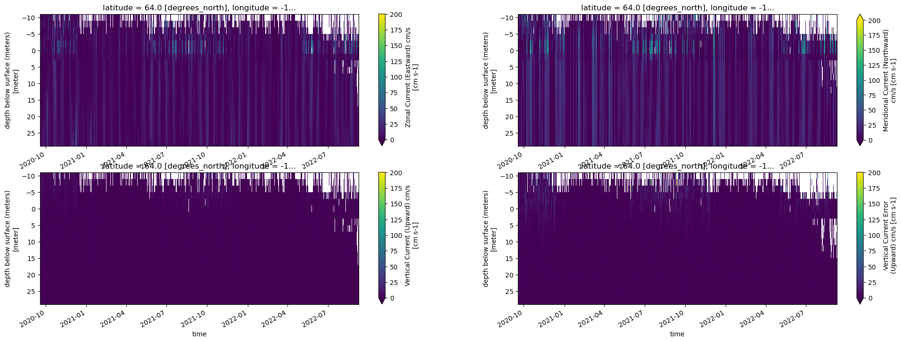
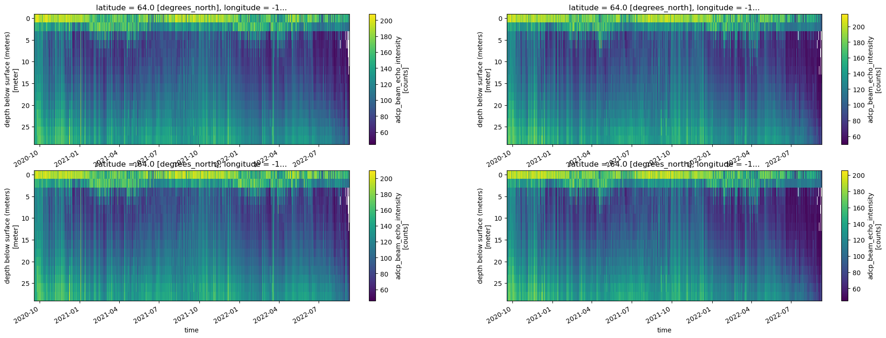
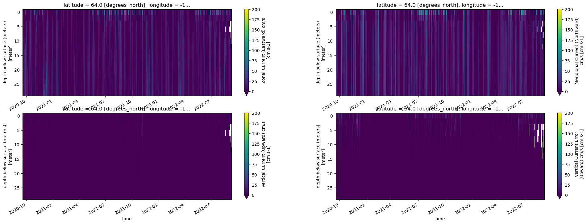

EcoFOCIpy ADCP QC - 20BSP-14A¶
mostly remove >100 cm/s flows in u/v
import xarray as xa
import numpy as np
import matplotlib.pyplot as plt
file_in = '20bsp14a_0031m.nc'
xdf = xa.load_dataset(file_in)
xdf =xdf.where(xdf.u_curr_comp <=100,np.nan)
xdf
<xarray.Dataset>
Dimensions: (latitude: 1, longitude: 1, time: 34591, depth: 20)
Coordinates:
* time (time) datetime64[ns] 2020-09-18T08:00:00 ... 2022-09-08...
* depth (depth) float64 -10.0 -8.0 -6.0 -4.0 ... 24.0 26.0 28.0
* latitude (latitude) float64 64.0
* longitude (longitude) float64 -167.9
Data variables:
u_curr_comp (latitude, longitude, time, depth) float64 -6.515 ... 0....
v_curr_comp (latitude, longitude, time, depth) float64 -13.85 ... 15.09
w_curr_comp (latitude, longitude, time, depth) float64 8.9 7.1 ... -0.1
w_curr_comp_err (latitude, longitude, time, depth) float64 -3.6 0.0 ... 0.4
agc1 (latitude, longitude, time, depth) float64 68.0 ... 80.0
agc2 (latitude, longitude, time, depth) float64 76.0 ... 76.0
agc3 (latitude, longitude, time, depth) float64 72.0 ... 86.0
agc4 (latitude, longitude, time, depth) float64 70.0 ... 69.0
Attributes: (12/13)
Latitude_DegMMddW: 64 00.156 N
Longitude_DegMMddN: 167 56.043 W
MooringID: 20BSP-14A
platform_deployment_date: 2020-09-18T07:37:00Z
platform_deployment_cruise_name: DY2012
platform_recovery_date: 2022-09-08T23:00:00Z
... ...
platform_deployment_recovery_comments:
WaterDepth: 38.1
date_created: 2022-11-21T09:47:13Z
date_modified:
QC_indicator: unknown
history: Trimmed to deployment.# xdf['history'] = xdf.history + 'QC of high u/v values'
#optional plotting
fig, axes = plt.subplots(ncols=2, nrows=2, figsize=(24,8))
try:
xdf['agc1'].T.plot(ax=axes[0,0], yincrease=False)
xdf['agc2'].T.plot(ax=axes[0,1], yincrease=False)
xdf['agc3'].T.plot(ax=axes[1,0], yincrease=False)
xdf['agc4'].T.plot(ax=axes[1,1], yincrease=False)
except:
pass
fig, axes = plt.subplots(ncols=2, nrows=2, figsize=(24,8))
try:
xdf['u_curr_comp'].T.plot(ax=axes[0,0],vmin=0, vmax=200, yincrease=False)
xdf['v_curr_comp'].T.plot(ax=axes[0,1],vmin=0, vmax=200, yincrease=False)
xdf['w_curr_comp'].T.plot(ax=axes[1,0],vmin=0, vmax=200, yincrease=False)
xdf['w_curr_comp_err'].T.plot(ax=axes[1,1],vmin=0, vmax=200, yincrease=False)
except:
pass


xdf.attrs['history'] = xdf.attrs['history']+' removed U,V >100cm/s'
Trim above surface (negative values)¶
ixdf = xdf.where(xdf.depth >=-0.).dropna(how='all',dim='depth')
ixdf.attrs['history'] = ixdf.attrs['history']+' trimmed above surface'
ixdf.to_netcdf(file_in.replace('.nc','.trimmed.nc'))
xdf = xa.load_dataset(file_in.replace('.nc','.trimmed.nc'))
ixdf = xdf.interpolate_na(dim='time',max_gap='2H')
ixdf.attrs['history'] = ixdf.attrs['history']+' linearly interpolated 1hour gaps'
Interpolate over singleton missing gaps linearly¶
fig, axes = plt.subplots(ncols=2, nrows=2, figsize=(24,8))
try:
ixdf['agc1'].T.plot(ax=axes[0,0], yincrease=False)
ixdf['agc2'].T.plot(ax=axes[0,1], yincrease=False)
ixdf['agc3'].T.plot(ax=axes[1,0], yincrease=False)
ixdf['agc4'].T.plot(ax=axes[1,1], yincrease=False)
except:
pass
fig, axes = plt.subplots(ncols=2, nrows=2, figsize=(24,8))
try:
ixdf['u_curr_comp'].T.plot(ax=axes[0,0],vmin=0, vmax=200, yincrease=False)
ixdf['v_curr_comp'].T.plot(ax=axes[0,1],vmin=0, vmax=200, yincrease=False)
ixdf['w_curr_comp'].T.plot(ax=axes[1,0],vmin=0, vmax=200, yincrease=False)
ixdf['w_curr_comp_err'].T.plot(ax=axes[1,1],vmin=0, vmax=200, yincrease=False)
except:
pass


ixdf.to_netcdf(file_in.replace('.nc','.filtered.nc'))